Chapter 6. Nonradar
Section 4. Longitudinal Separation
6-4-1. APPLICATION
Separate aircraft longitudinally by requiring them to do one of the following, as appropriate:
- Depart at a specified time.
- Arrive at a fix at a specified time.
- Hold at a fix until a specified time.
- Change altitude at a specified time or fix.
6-4-2. MINIMA ON SAME, CONVERGING, OR CROSSING COURSES
Separate aircraft on the same, converging, or crossing courses by an interval expressed in time or distance, using the following minima:
- When the leading aircraft maintains a speed at least 44 knots faster than the following aircraft - 5 miles between DME equipped aircraft; RNAV equipped aircraft using ATD; and between DME and ATD aircraft provided the DME aircraft is either 10,000 feet or below or outside of 10 miles from the DME NAVAID, or 3 minutes between other aircraft if, in either case, one of the following conditions is met:
- A departing aircraft follows a preceding aircraft which has taken off from the same or adjacent airport. (See FIG 6-4-1.)
FIG 6-4-1Minima on Same Course 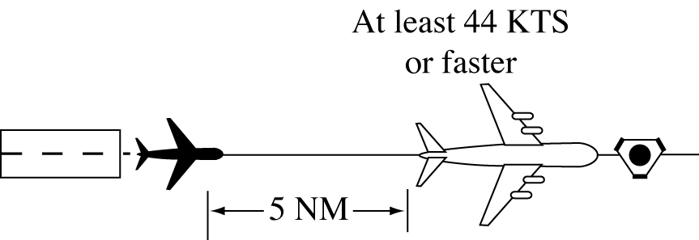
- A departing aircraft follows a preceding en route aircraft which has reported over a fix serving the departure airport. (See FIG 6-4-2.)
FIG 6-4-2Minima on Converging Courses 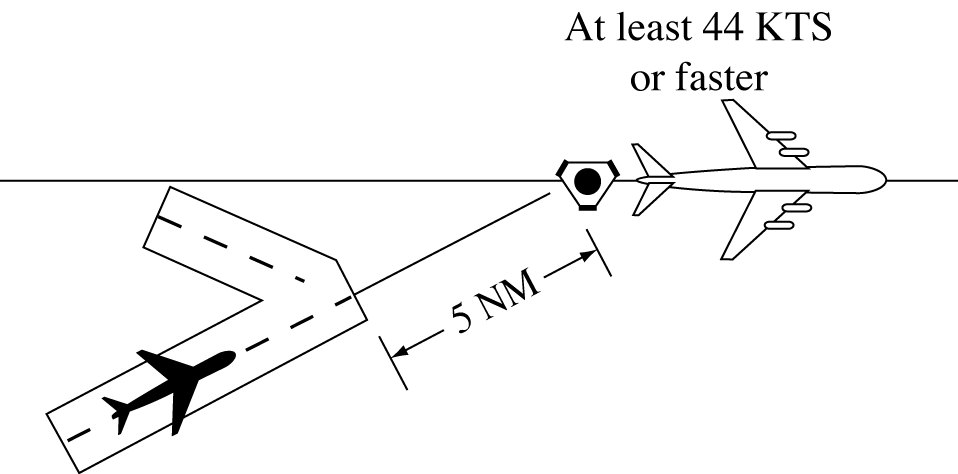
- An en route aircraft follows a preceding en route aircraft which has reported over the same fix. (See FIG 6-4-3.)
FIG 6-4-3Minima on Crossing Courses 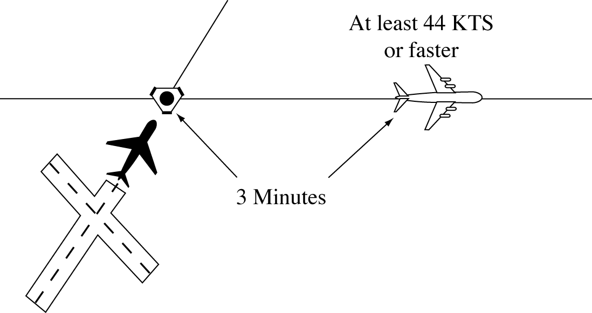
- A departing aircraft follows a preceding aircraft which has taken off from the same or adjacent airport. (See FIG 6-4-1.)
- When the leading aircraft maintains a speed at least 22 knots faster than the following aircraft - 10 miles between DME equipped aircraft; RNAV equipped aircraft using ATD; and between DME and ATD aircraft provided the DME aircraft is either 10,000 feet or below or outside of 10 miles from the DME NAVAID; or 5 minutes between other aircraft if, in either case, one of the following conditions exists:
- A departing aircraft follows a preceding aircraft which has taken off from the same or an adjacent airport. (See FIG 6-4-4.)
FIG 6-4-4Minima on Same Course 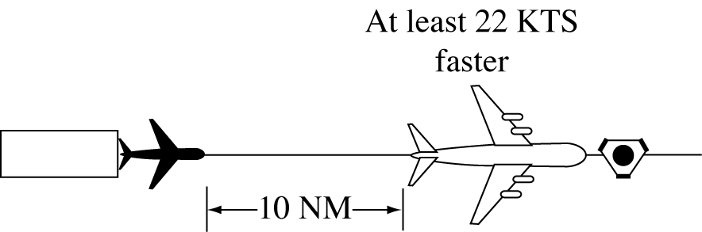
- A departing aircraft follows a preceding en route aircraft which has reported over a fix serving the departure airport. (See FIG 6-4-5.)
FIG 6-4-5Minima on Converging Courses 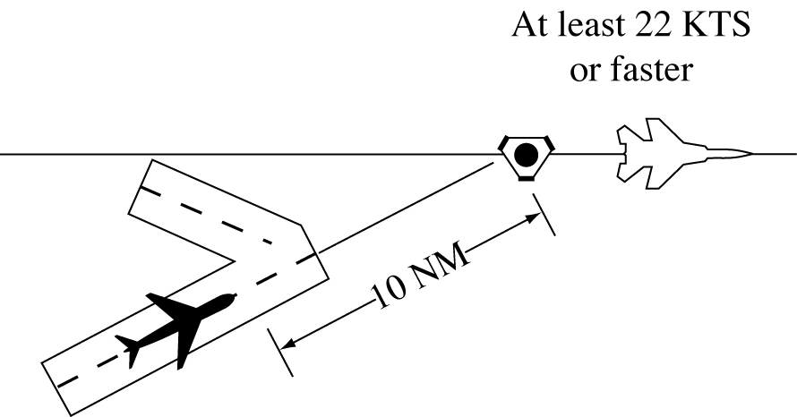
- An en route aircraft follows a preceding en route aircraft which has reported over the same fix. (See FIG 6-4-6.)
FIG 6-4-6Minima on Crossing Courses 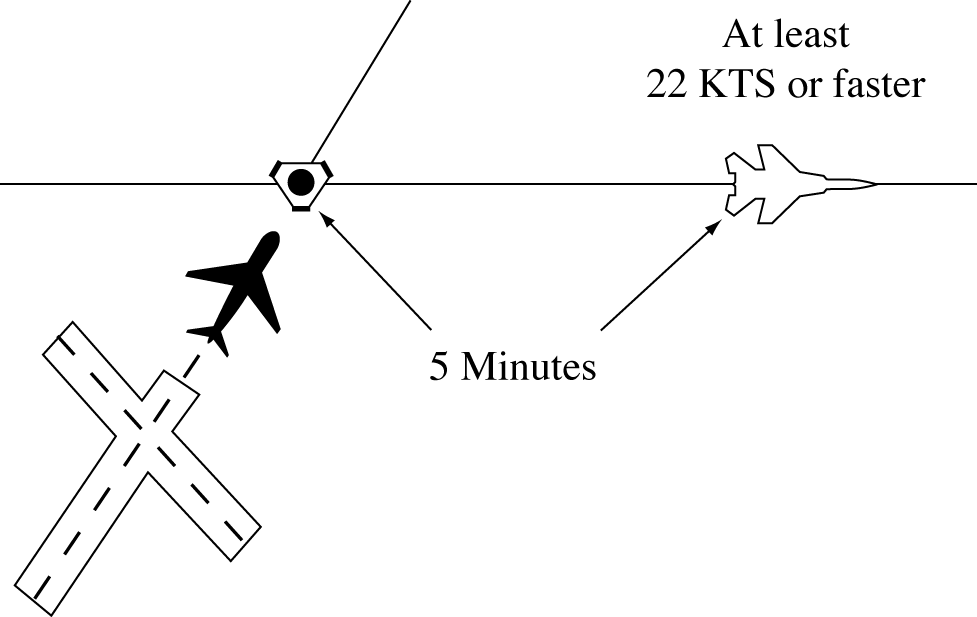
- A departing aircraft follows a preceding aircraft which has taken off from the same or an adjacent airport. (See FIG 6-4-4.)
- When an aircraft is climbing or descending through the altitude of another aircraft:
- Between DME equipped aircraft; RNAV equipped aircraft using ATD; and between DME and ATD aircraft provided the DME aircraft is either 10,000 feet or below or outside of 10 miles from the DME NAVAID- 10 miles, if the descending aircraft is leading or the climbing aircraft is following. (See FIG 6-4-7 and FIG 6-4-8.)
FIG 6-4-7Descending Through Another Aircraft's Altitude DME Separation 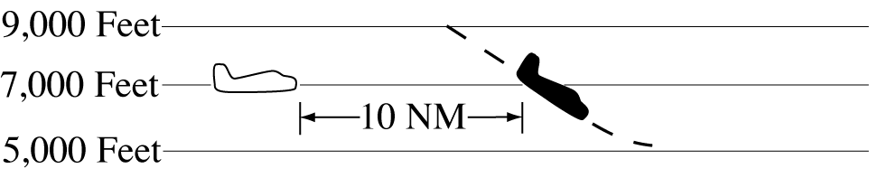
FIG 6-4-8Climbing Through Another Aircraft's Altitude DME Separation - Between other aircraft- 5 minutes, if all of the following conditions are met: (See FIG 6-4-9 and FIG 6-4-10.)
- The descending aircraft is leading or climbing aircraft is following.
- The aircraft are separated by not more than 4,000 feet when the altitude change started.
- The change is started within 10 minutes after a following aircraft reports over a fix reported over by the leading aircraft or has acknowledged a clearance specifying the time to cross the same fix.
- Between RNAV aircraft that are operating along an RNAV route that is eight miles or less in width- 10 miles provided the following conditions are met:
- The descending aircraft is leading or the climbing aircraft is following.
- The aircraft were separated by not more than 4,000 feet when the altitude change started.
FIG 6-4-9Descending Through Another Aircraft's Altitude Timed Separation 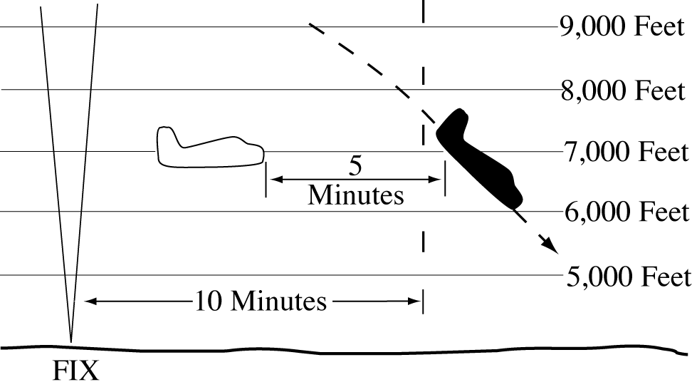
FIG 6-4-10Climbing Through Another Aircraft's Altitude Timed Separation 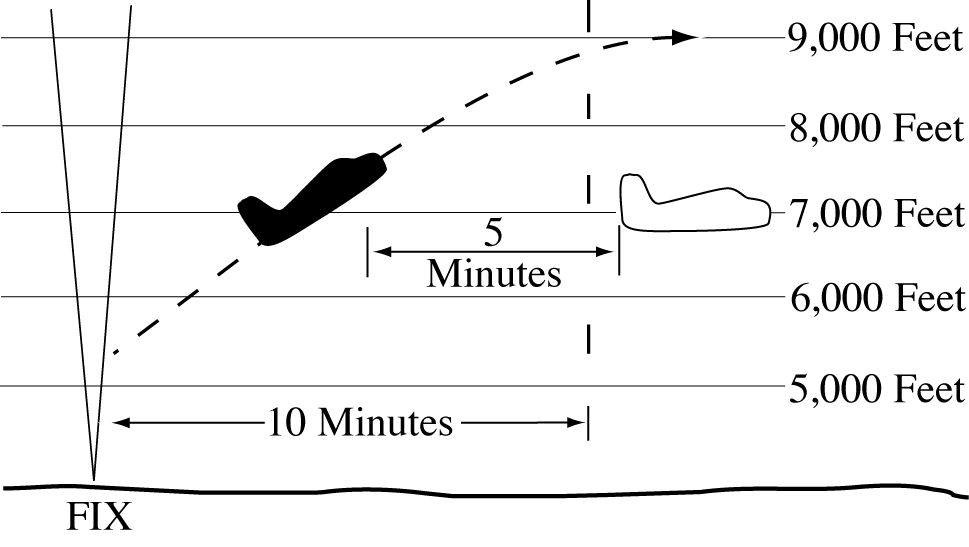
- Between DME equipped aircraft; RNAV equipped aircraft using ATD; and between DME and ATD aircraft provided the DME aircraft is either 10,000 feet or below or outside of 10 miles from the DME NAVAID- 10 miles, if the descending aircraft is leading or the climbing aircraft is following. (See FIG 6-4-7 and FIG 6-4-8.)
- When the conditions of subparagraphs a, b, or c cannot be met- 20 miles between DME equipped aircraft; RNAV equipped aircraft using ATD; and between DME and ATD aircraft provided the DME aircraft is either 10,000 feet or below or outside of 10 miles from the DME NAVAID; or 10 minutes between other aircraft. (See FIG 6-4-11, FIG 6-4-12, FIG 6-4-13, FIG 6-4-14, FIG 6-4-15, and FIG 6-4-16.)
FIG 6-4-11Minima for Same Course Separation 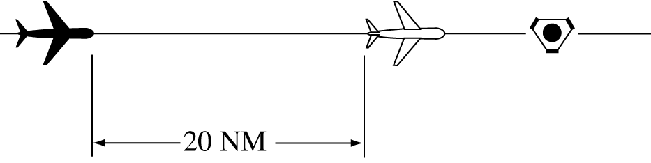
FIG 6-4-12Minima for Crossing Courses Separation FIG 6-4-13Minima for Same Course Separation 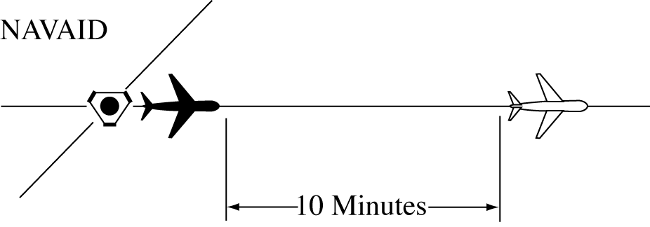
FIG 6-4-14Minima for Crossing Courses Separation 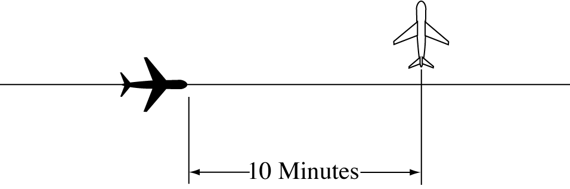
FIG 6-4-15Climbing Through Another Aircraft's Altitude Separation 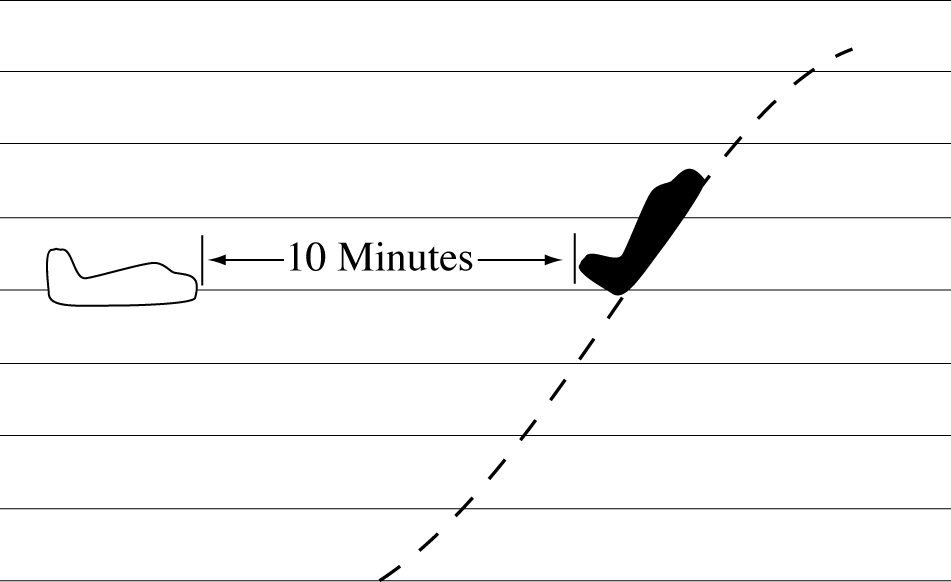
FIG 6-4-16Descending Through Another Aircraft's Altitude Separation 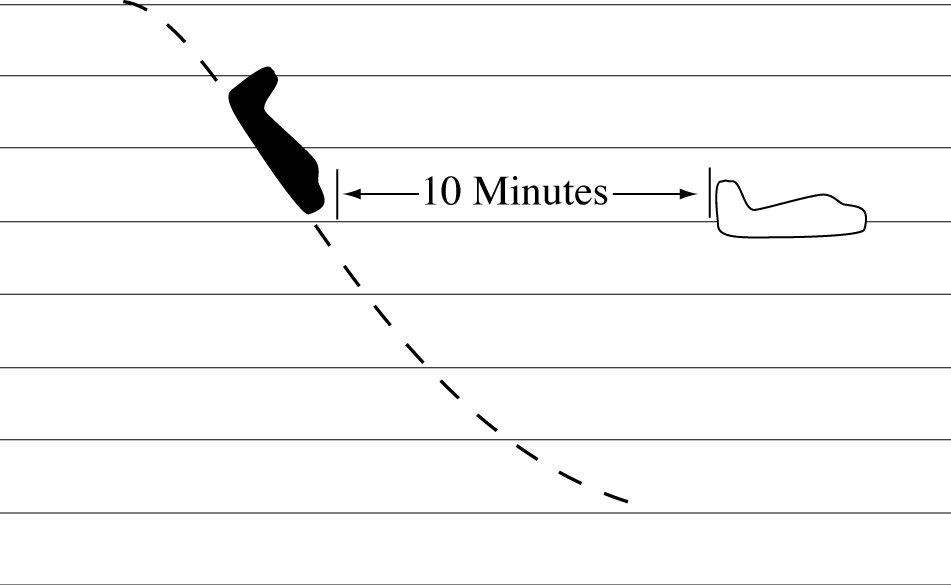
- Between aircraft, when one aircraft is using DME/ATD and the other is not- 30 miles if both the following conditions are met: (See FIG 6-4-17 and FIG 6-4-18.)
FIG 6-4-17Minima for Same Course Separation 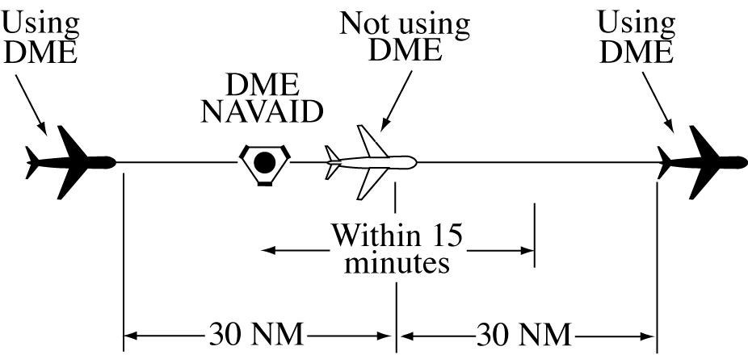
FIG 6-4-18Minima for Crossing Courses Separation 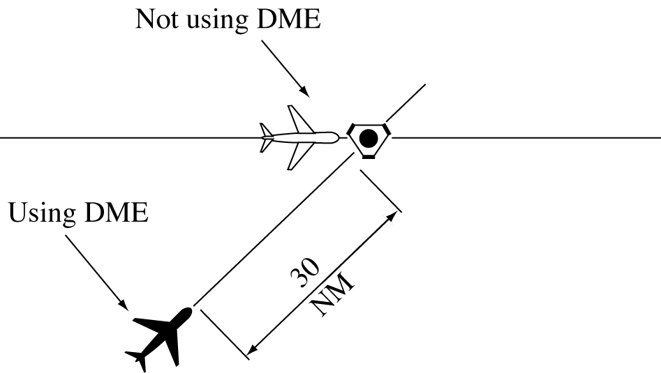
- The aircraft using DME/ATD derives distance information by reference to the same NAVAID or waypoint over which the aircraft not using DME/ATD has reported.
- The aircraft not using DME/ATD is within 15 minutes of the NAVAID.
6-4-3. MINIMA ON OPPOSITE COURSES
Separate aircraft traveling opposite courses by assigning different altitudes consistent with the approved vertical separation from 10 minutes before, until 10 minutes after they are estimated to pass. Vertical separation may be discontinued after one of the following conditions is met: (See FIG 6-4-19.)
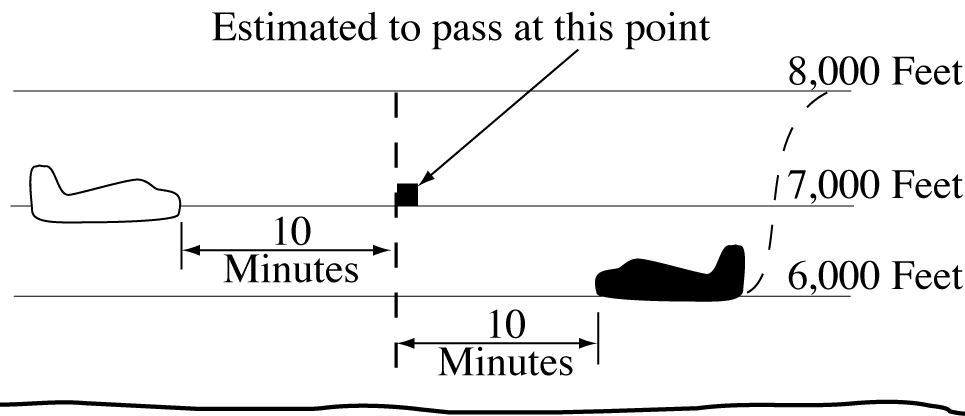
- Both aircraft have reported passing NAVAIDs, DME fixes, or waypoints indicating they have passed each other. (See FIG 6-4-20.)
FIG 6-4-20Minima for Opposite Courses Separation 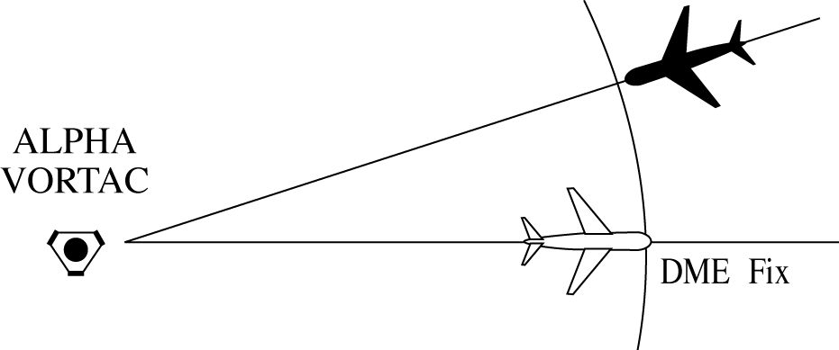
- Both aircraft have reported passing the same intersection/waypoint and they are at least 3 minutes apart.
- Two RNAV aircraft have reported passing the same position and are at least 8 miles apart if operating along a route that is 8 miles or less in width; or 18 miles apart if operating along any route segment that is greater than 8 miles in width; except that 30 miles must be applied if operating along that portion of any route segment defined by a navigation station requiring extended usable distance limitations beyond 130 miles.
- An aircraft utilizing RNAV and an aircraft utilizing VOR have reported passing the same position and the RNAV aircraft is at least 4 miles beyond the reported position when operating along a route that is 8 miles or less in width; 9 miles beyond the point when operating along any route segment that is greater than 8 miles in width; except that 15 miles must be applied if operating along that portion of any route segment defined by a navigation station requiring extended usable distance limitation beyond 130 miles; or 3 minutes apart whichever is greater.
6-4-4. SEPARATION BY PILOTS
When pilots of aircraft on the same course in direct radio communication with each other concur, you may authorize the following aircraft to maintain longitudinal separation of 10 minutes; or 20 miles between DME equipped aircraft; RNAV equipped aircraft using ATD; and between DME and ATD aircraft provided the DME aircraft is either 10,000 feet or below or outside of 10 miles from the DME NAVAID.
6-4-5. RNAV AIRCRAFT ALONG VOR AIRWAYS/ROUTES
Advise the pilot to use DME distances when applying DME separation to an RNAV aircraft operating along VOR airways/routes.